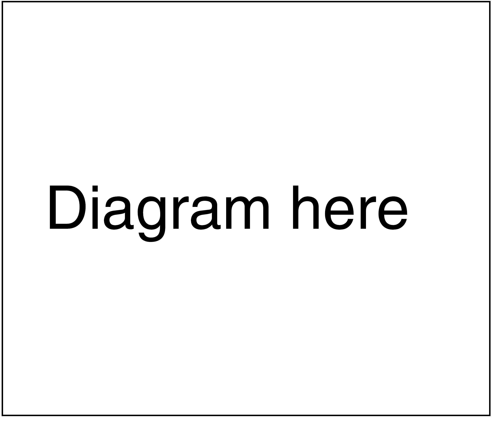
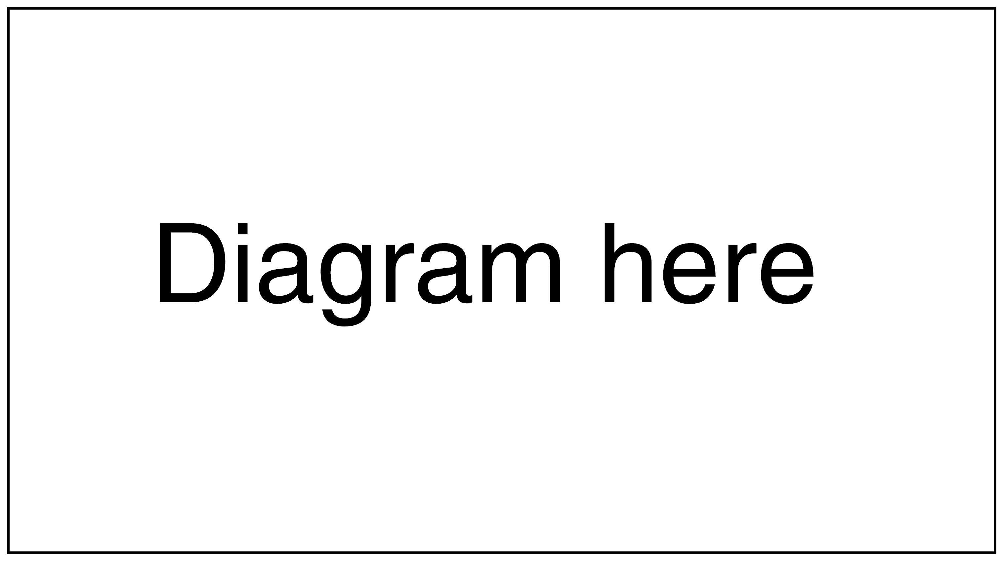

Throughout this documentation, you may encounter unfamiliar terms. To dispel any confusion, a near-exhaustive list of terms and their definitions have been provided in the appendix.
Getting started
JCMS Monitoring Dashboard (currently v1.1.0) provides an easy setup for developers and service managers alike. Read through to see what suits your particular needs.
The production repository is located at /carm/proj/HG/tools/cpd_intern_prod on sinsv-12.
Once cloned, navigate to the project root directory and enter:
$ ./activator
Run in development mode
You can enable hot-compiling by running in development mode with the following (demo config):
[JCMS Monitoring Dashboard] $ run -Dconf.resource=demo.conf -Dhttp.port=9000
Run in production mode
You can run in production mode with the following (demo config):
[JCMS Monitoring Dashboard] $ start -Dconf.resource=demo.conf -Dhttp.port=9000
-Dconf.resource=[CONF_NAME].conf loads all setup options in /conf/[CONF_NAME].conf and uses them to determine deployment settings. You can also define your own configuration file and load them; however, the configuration options cannot be changed during runtume. For more details, see Configuration.
-Dttp.port sets the port used by the application. The default is 9000.
More commands and options
The application's console uses the Play! console syntax. See the official documentation here for more information.
Directory structure
All sources are contained in /app, organised into packages. Accordingly, the directory naming of /app subfolders is synonymous with the naming of packages. Configuration options are found in /conf. A list of important directories of the project is as follows:
/
├── app/
| ├── actors/ # Akka actors used in monitoring file states
| ├── assets/ # JS/LESS files that are compiled and symlinked in /public by the application
| ├── charts/ # Handles chart logic and data
| ├── controllers/ # Handles HTTP requests incoming from routes; see /conf/routes
| ├── cookies/ # Source files that handles and builds cookies
| ├── database/ # Source files that handle database access and retrieval operations
| ├── global/ # Contains values required throughout the application
| ├── logboxes/ # Handles log viewing logic and data
| ├── parsers/ # Contains all log parsers and their helper entities.
| ├── tools/ # Miscellaneous tools and sources
| ├── views/ # Templates used by the application to generate HTML pages
| └── Global.scala # Contains application startup procedure and operations
├── conf
| ├── database/
| | └── database.conf # Contains database setup options used during application startup
| ├── demo.conf # Configuration file used for demonstration purposes
| └── routes # Routes that map HTTP requests with controllers; see /app/controllers/
├── databases/ # DB files containing parsed log data
├── demo/ # Sample logs for use in demo mode
├── public/ # Public static assets that are used by the application (favicons, images, etc.)
├── target/ # Contains managed dependencies (JS, Scala, Play)
└── test/ # Contains test sourcesConfiguration
The configuration files located in /conf contain a few options necessary for the application to know the location
of and structure of logs, such that data contained within them can be parsed and stored in the configured databases.
Required options
| Option | Description |
|---|---|
log.root.directory |
Top-level directory acting as a pointer to which relative paths in
important.files are linked |
important.files |
A list of folders in log.root.directory from which the application should crawl for logs |
ignore |
List of regexes specifying files to ignore |
username.regex |
A matching regex that specifies the owner of the log. The actual nature of this regex can vary depending on how the log parsers are implemented, since only those parsers will use this parameter. |
Deployment-specific options
For the application to categorise logs, each log semantic's file naming syntax and logging structure must be defined in the configuration file as follows:
| Option | Description |
|---|---|
[NEW_LOG].logs.filename |
A list of regexes specifiying file naming syntax for [NEW_LOG]. |
[NEW_LOG].logs.firstline |
A list of regexes specifiying the syntax of the first few lines of [NEW_LOG]. |
Each log MUST NOT fall under multiple categories; see policy #1. Logs that do not fall in any of the above categories/semantics, that are not ignored, will be automatically categorized as "unclassified".
The following optional parameters may be useful in optimising the performance of the application:
| Option | Description | Default |
|---|---|---|
spacesaving |
Boolean value. If true, logs more than seven days old are not parsed. |
true
|
days.to.parse |
Integer value. Modifies the period in spacesaving for an old log to be skipped while parsing. |
7
|
Database options
Data parsed from each log type/semantic should occupy only one database file; see policy #2. To define a database for a log semantic, the following lines should be appended to /conf/database/database.conf :
db.[NEW_LOG] {
driver=org.sqlite.JDBC
url="jdbc:sqlite:"${?PWD}"/databases/[NEW_LOG].db"
}Parsing new semantics
A new parser will be required to process data from logs with the new semantic, using new log definitions provided in the configuration file. Refer to this for a full-stack, step-by-step guide on processing log data from new semantics and displaying them on the browser.
Features
JCMS Monitoring Dashboard is an extensible diagnostics platform designed to collect, parse and transform logs into structured data for easy querying and indexing. It serves a website allowing users to efficiently view content from the selected logs generated intuitively and visually.
The tasks performed by the application during runtime can be summarized as such:
- Crawl a set of predetermined directories and retrieve all logs in those directories and their descendant directories.
- Select relevant logs based on predetermined criteria, and classify them according into predetermined categories based on their file name and syntactical structure.
- Parse each relevant log to extract useful content and store the information in a database, allowing for different algorithms to be used for different log files.
- Serve a website where users can select the content they wish to see.
- Deliver content from logs to the user through the website quickly, with minimal latency between the user request and the successful delivery of the content (on the order of seconds, and not minutes or hours).
In the event of a new log semantic or content, the application can be easily extended in a highly organised fashion. It achieves this by adopting a highly object-oriented approach, such that implementing new functionality can be as simple as writing new modules for new entities and adding those entities into the system.
The application comes equipped with components enabling it to handle - without crashing - large volumes of logs and background log I/O as would be the case in a production environment:
- Logs with arbitrarily many lines, even on the order of tens of millions.
- Logs with lines that are arbitrarily long, even on the order of hundreds of thousands.
- Logs being created, deleted, or renamed during runtime.
- Logs being modified or appended to during runtime.
- Two logs in different directories having the same file name.
Developers working on extending the application should ensure that all the above cases are catered for when implementing new components.
Supported logs
As of v1.1.0, the application recognises only Alert, DaveModelCheck, Interface, Studio, ReportWorker, Portal log semantics as follows:
| Log semantic | File naming syntax | First line syntax |
|---|---|---|
| Alert | "alertgenerator\.\w+\.\S+" |
".+" |
| DaveModelCheck | "oracle_database_dangling_reference.log" |
"Oracle Database Dangling Reference Check on \d{4}-\d{2}-\d{2} \d{2}:\d{2}:\d{2}" |
| Interface | ".+" |
"<\d\d>\d \d{4}-\d{2}-\d{2}T\d{2}:\d{2}:\d{2}\.\d{3}Z \S+ \S+: .+" |
| Studio | "studio\.Tracking\.\S+" |
"Studio Log: started on .+" |
| ReportWorker / Portal | "reportworker\.\S+" |
".+" |
Architecture
JCMS Monitoring Dashboard is built on Play!, which provides MVC functionality for hassle-free extensibility.
Overview
The application can be said to comprise four discrete parts:
- Play! Framework
- Unix file system
- SQLite databases
- Client browser
Seen in the diagram above, data always flows from the file system to the client, with some being stored in the database. The application therefore serves to retrieve, extract, and deliver that data from the file system to the client.
The Application itself can be segregated into "back-end" and "front-end". A general rule by which this classification is made is that components that put data into the database are considered "back-end", while components that retrieve data from the database are considered "front-end".
The back-end's main responsibility is to extract and store as much data from the log files as reasonably possible before the user requests to retrieve them, so that the data can be delivered to the user as quickly as possible upon request. For this reason, the back-end is active all the time, periodically performing time-intensive data retrieval and processing operations, and storing the data in the database for quick on-demand retrieval by the front-end.
However, some time-intensive operations are also space-intensive. If the data from such operations were stored in the database, this would create unnecessary disk space overheads. As such, operations that are both time-intensive and space-intensive have to be done by the front-end, where the data generated can be immediately delivered to the client and then discarded. This design decision threatens to compromise the ideal of quick delivery of data, so to mitigate this, the back-end also collects information from the log files that can expedite these operations. This design decision has proven to be highly effective - in one case, processing time was cut from 30 seconds to just 3 seconds.
The front-end's main responsibility is to handle HTTP requests, and deliver content from the log file to the user in the form of HTML or JSON, which can be served to the user's web browser via HTTP. It is only responsible for handling user requests, so it is only active when a user request is submitted. Most of the data that is served by the front-end can be simply retrieved from the database, but, as mentioned above, some have to be retrieved directly from the file system due to the voluminous nature of the data. The front-end also retrieves information directly from the file system if the nature of the information is not predetermined.
Once it possesses the information that was requested by the user, it puts this information into a dynamic HTML template, and serves it to the Client. The front-end also deals in JSON, which is used to dynamically populate a HTML page that has already been delivered.
The above framework implementation and infrastructure is also known as a MVC (model-view-controller) architecture.
Packages
All sources are contained in /app, organised into packages and objects.
From the architectural overview, it is clear that there are four important types of entities in the application (which correspond to the four most prominent packages):
- Parsers (package
parsers) - DAO Objects (package
database) - Controllers (package
controllers) - Views (package
views)
Parsers are objects that extract data from log files, by reading them line-by-line and performing certain processing operations on each line of text.
DAO Objects are objects that act as the interface between the Scala program and the database files. Instead of allowing all parts of the program to make direct connections to the databases, all methods that involve some sort of interaction with the database are encapsulated in the DAO Objects. This design decision was made to ensure thread safety, among other things.
Controllers are objects that handle HTTP requests, and pull together the necessary resources to serve the correct content back to the requester.
Views are objects that contain HTML intertwined with Scala code providing dynamic content. HTML pages are delivered by these objects when they are called in controller methods.
Other packages, such as charts, logboxes are less important, but they are critical in
displaying and visualising parsed data. These packages form the "front-end" of the application.
Points of entry
There are three possible situations where the system is actively performing tasks:
- When the Application is started up
- When a periodic check is triggered
- When an HTTP request is received
The detailed sequence of events for each of the above situations will not be included in this document,
due to the sheer complexity of it. A better way of attaining an understanding of the sequence of events
will be to trace the method calls using an IDE that allows for Ctrl-click code navigation,
such as Eclipse or IntelliJ Idea.
Instead, the points of entry (i.e., the first method to be called) will be listed below:
When the Application is started up:
app.Global.onStart()
When a periodic check is triggered:
app.actors.FileSystemObserverActor.receive
When a HTTP request is received:
Look for the controller method that maps to the URL requested in conf.routes.
Init components
These are the entities that collectively form the skeleton of the application:
| Entity name and description | |
|---|---|
 |
GlobalA packageless object that the Play! Framework looks at first when the Application is started. |
|
global.GlobalConstantsA container for objects that need to be referenced from more than one package. |
 |
actors.FileSystemObserverActorThe actor that ensures that the database is up to date with the file system. |
|
actors.ParserActorThe actor that performs parsing operations in parallel. |
 |
parsers.ParserLikeWithCheckerThe trait for all parsers. For each category of log files that the Application must handle, there should be one child of this trait. |
|
parsers.ParserLikeWithCheckerThe master of all parsers. This object is the only object in the entire Application that maintains a list of all parsers that exist in the system, and performs the assignment of log files to parsers. |
|
parsers.parsermodules.ParserModuleThe trait for all parser modules. |
|
parsers.tools.BoundedBufferedReaderA wrapper for the BufferedReader class, which allows for a character limit to be set
for the readLine() method.
|
Databases
DAO Objects perform read/write operations on database tables and data stored in them. They perform as object-relational
mappers, i.e. insertion and extraction of data is done with object/class methods. Rudimentary SQL query methods are contained
within the LogDAO trait. This trait is made available for other DAO Objects related to a specific log semantic to inherit:
|
database.LogDAOThe trait for all DAO Objects. For each log semantic that the application must handle, there should be one child of this trait. |
|
database.LogDAOThe master of all DAO Objects. This object is the only object in the entire Application that maintains a list of the DAO Objects that exist in the system, and contains methods that perform operations across all database files. Also contains low-level API methods that make direct connections to the databases. |
Every database must maintain a list of log metadata of the semantic/log type that it handles,
in the form of a masterlist table. Metadata from each log of that semantic should be recorded and stored in only
ONE masterlist table , e.g. Studio log metadata is recorded in masterlist
in logs-studio.db. However, each log will have varied syntaxes, structures and data to parse and parsers
may extract more than one type of data from each log, e.g. performance metrics, error tracking, etc. To handle this, each
data type extracted from each log will be stored in a separate table using a tabletrait trait that handles
highly specialised database operations on a specific data type; see Policy #5.
|
database.[NAME]LogsDAOThe DAO Object for performing insertion and extraction of data related to logs with [NAME] semantic. |
|
database.tabletraits.MasterlistThe tabletrait for the " masterlist" static table. This tabletrait contains methods performing read/write operations related to a log's metadata.
|
The masterlist table can contain as much information as required,
and contain as many columns as required, but it must at least contain the following columns:
filename VARCHAR(64)- The file name of the log.user VARCHAR(16)- The username of the account from which the log originated.lastmodified VARCHAR(16)- The date last modified of the file, formatted as a string using the convention "yyyy-MM-dd HH:mm:ss".nooflines INT- The number of lines in the log (as per the most recent parse).size INT- The size of the log in bytes (as per the most recent parse).absolutepath VARCHAR(128) PRIMARY KEY UNIQUE NOT NULL- The absolute, canonical path of the log.
The masterlist table is an example of a static table,
meaning that it exists independently of how many logs are registered in the database.
This is fine because the nature of the data that it stores will only require one row for each log.
However, if there is a data set that will require more than one row for each log, a dynamic table scheme should be employed. This means that instead of storing all data from all logs in one huge table, there should exist many tables with the same structure (i.e., column names and types), with each table only containing information about one log. In such a case, the table's name will be used to both identify the table as belonging to a certain class of tables, and also to indicate which log it corresponds to. We shall call this type of table scheme a dynamic table.
The table name for dynamic tables should be a concatenation of a predetermined prefix and the
absolute path of the log, with all non-alphanumeric characters removed.
For example, a table that lists the function calls (with the prefix "functioncalls"),
containing information from the log file with absolute path
"/users/jonfoo/logfiles/studio.Tracking.jonfoo.sinsv-11_2" would be called:
"functioncallsusersjonfoologfilesstudioTrackingjonfoosinsv11_2".
To make this structure and convention easier to maintain, methods pertaining to dynamic tables should have as many parameters as possible hard-coded, to prevent errors arising from having to pass in table names from the outside. This means that the methods should be as specific and as specialised as possible.
To make maintaining this structure even more convenient, developers can use the idea of "tabletraits".
These traits are all children of LogDAO,
and are designed to be extended by the DAO Objects that require a certain table type to be implemented.
They implement highly specialised creation, deletion, insertion and selection methods for a class of tables,
and abstract away the table name by only taking in the raw absolute path as a parameter for identifying
the table. Using the idea of tabletraits, multiple DAO Objects that are required to implement the same
table scheme do not need to each implement the methods for
handling that type of table, but can instead simply all extend the same tabletrait.
Supported logs
As of v1.1.0, Studio, Alert, Interface, ReportWorker/Portal, DaveModelCheck log semantics are supported with the following DAO Objects and tabletraits:
|
database.AlertLogsDAOThe DAO Object for Alert log files. |
|
database.DRefLogsDAOThe DAO Object for Dangling Reference log files. |
|
database.GenericLogsDAOThe DAO Object for unclassified log files. |
|
database.InterfaceLogsDAOThe DAO Object for Interface log files. |
|
database.RWPortalLogsDAOThe DAO Object for Report Worker / Portal log files. |
|
database.StudioLogsDAOThe DAO Object for Studio log files. |
|
database.tabletraits.DanglingrefThe tabletrait for the " danglingref" dynamic table scheme.
|
|
database.tabletraits.DatelineThe tabletrait for the " dateline" dynamic table scheme.
|
|
database.tabletraits.FunctioncallsThe tabletrait for the " functioncalls" dynamic table scheme.
|
|
database.tabletraits.MasterlistThe tabletrait for the " masterlist" static table.
|
|
database.tabletraits.TracebacksThe tabletrait for the " tracebacks" dynamic table scheme.
|
Creating a new DAO Object
Given a new log semantic to process, a DAO Object must be created to guard the new database file
that must also be created to store the requisite data. This object must extend the
LogDAO trait, as well as the Masterlist tabletrait.
The naming convention for DAO Objects is [NAME]LogsDAO.
This DAO Object will also need to extend the tabletraits that it needs,
depending on what kind of tables are needed. If none of the tabletraits meet your needs,
you can create a new one. After this, you will need to override and implement the
following valUES and methods:
val LOCK: ReentrantLock- The mutex for this DAO Object.val dbName: String- The name of the database that this DAO Object guards. The name must correspond with the one in conf/databases/database.conf. In our case, the dbName would belogs-[name].db.val defaultParser: ParserLikeWithChecker- The parser object that handles this category of log files. We will talk about the parser later, but for now you can just know that it will be called[NAME]LogParser.val masterlist_columns: Array[(String, String)]- Define the column names and types for themasterlisttable. This was left unimplemented because the requirements might be different for different categories of log files. Remember to include the 6 mandatory columns listed above; see Policy #5.def createAllTables- The method that will create all the necessary tables in the database. Within this method, you will need to call all the creation methods for all the static tables that the DAO Object implements. For example, since every database must have amasterlisttable, the methodcreateTable_masterlistwill definitely appear here. If you add more tabletraits for static tables in future, remember to add their creation methods here. It is senseless to call the creation methods for dynamic tables here, because the nature of the dynamic tables to create will not be known until runtime.def dropAllTables- The method that will drop all tables from this database. Within this method, you will need to call all the deletion methods for all tables, including dynamic tables. You will definitely need to includedropTable_masterlist, but this method must be last, because the deletion methods of most dynamic tables require information frommasterlist, somasterlistmust be dropped last.def deleteAllWithAbsolutePath(absolutepath: String)- The method that will delete all entries from all tables in the database that pertain to a particular log file, as identified by its absolute (canonical) path. Within this method, you will need to call the method in every tabletrait to delete entries pertaining to a specified absolute path.def cleanup- The method that will clean up old and irrelevant data so as to free up space on the disk. It is very possible that this method is empty, since not all databases need to be cleaned up.def getAllList_masterlist(): Array[List[Any]]- The method that returns the content of the entiremasterlisttable in Scala form. This method was left unimplemented because the columns in the table will vary between log file categories.- Any other unimplemented methods or vals from other tabletraits.
In the constructor of the DAO Object, you will need to register
the object with LogDAO by calling LogDAO.register(this), and also call
createAllTables to create all the necessary static tables.
Parsers
{kind=link}
The figure above illustrates the mechanism by which the application extracts data from logs and puts it in the database.
When a log is passed to the parser, the parser reads the file line by line. Each line is passed to each of the parser modules that are installed in the parser. The parser modules perform the processing on the line of text, then write the extracted data into the database via the associated DAO Object.
No processing is done in the parser itself. All processing logic is encapsulated in the parser.parsermodules
package, i.e. the parser is the skeleton holding the parsing logic, while parsermodules parse data of a specific type.
This is to maintain modularity and extensibility. Some of these parser modules may also be used universally
with other parsers for different categories of logs.
Given how parsermodules are specific with the data they parse, and how each tabletrait contains the
read/write methods for one specific static or dynamic table, parsermodules should be written
such that inherit only one tabletrait and write into one table in a database.
It should be apparent, then, that parsermodules and tabletraits function together.
|
parsers.[NAME]LogParserThe parser for [NAME] log files. |
|
parsers.parsermodules.[NAME]LogMainModuleThe main parser module for [NAME] log files. |
|
parsers.parsermodules.FunctionCallParserModuleThe main parser module that populates the functioncalls dynamic table scheme.
|
|
parsers.containers.[NAME]LogViewA container for parameters that tell [NAME]LogHTMLParser how to deliver its content as HTML.
|
Supported logs
As of v1.1.0, Studio, Interface, Alert, ReportWorker, Portal, DaveModelCheck log semantics are supported with the following parsers, parsermodules and containers:
| Entity | |
|---|---|
|
parsers.AlertLogParserThe parser for Alert log files. |
|
parsers.DRefLogParserThe parser for Dangling Reference log files. |
|
parsers.GenericLogParserThe parser for unclassified log files. |
|
parsers.InterfaceLogParserThe parser for Interface log files. |
|
parsers.RWPortalLogParserThe parser for Report Worker / Portal log files. |
|
parsers.StudioLogParserThe parser for Studio log files. |
|
parsers.AlertLogHTMLParserThe HTML parser for Alert log files. |
|
parsers.DRefLogHTMLParserThe HTML parser for Dangling Reference log files. |
|
parsers.GenericLogHTMLParserThe HTML parser for unclassified log files. |
|
parsers.InterfaceLogHTMLParserThe HTML parser for Interface log files. |
|
parsers.RWPortalLogHTMLParserThe HTML parser for Report Worker / Portal log files. |
|
parsers.StudioLogHTMLParserThe HTML parser for Studio log files. |
|
parsers.containers.AlertLogViewA container for parameters that tell the AlertLogHTMLParser how to deliver its content.
|
|
parsers.containers.DRefLogViewA container for parameters that tell the DRefLogHTMLParser how to deliver its content.
|
|
parsers.containers.GenericLogViewA container for parameters that tell the GenericLogHTMLParser how to deliver its content.
|
|
parsers.containers.InterfaceLogViewA container for parameters that tell the InterfaceLogHTMLParser how to deliver its content.
|
|
parsers.containers.LogViewA trait for all LogView classes. |
|
parsers.containers.RWPortalLogViewA container for parameters that tell the RWPortalLogHTMLParser how to deliver its content.
|
|
parsers.containers.StudioLogViewA container for parameters that tell the StudioLogHTMLParser how to deliver its content.
|
|
parsers.containers.TableA container for values that behaves like a table. |
|
parsers.containers.TokenBoxA container for Token objects.
|
|
parsers.containers.TokenA class that is used with HTML parsers, to instruct them on how to format lines of text that contain a certain regex. |
|
parsers.containers.ScopeA container for constant integer values that instruct HTML parsers how to format lines of text. |
|
parsers.containers.FormatA container for parameters that represent a text formatting setting. |
|
parsers.parsermodules.AlertLogMainModuleThe main parser module for Alert log files. |
|
parsers.parsermodules.DanglingRefParserModuleThe main parser module that populates the danglingref dynamic table scheme.
|
|
parsers.parsermodules.DateLineParserModuleThe main parser module that populates the dateline dynamic table scheme.
|
|
parsers.parsermodules.DRefLogMainModuleThe main parser module for Dangling Reference log files. |
|
parsers.parsermodules.FunctionCallParserModuleThe main parser module that populates the functioncalls dynamic table scheme.
|
|
parsers.parsermodules.GenericLogMainModuleThe main parser module for unclassified log files. |
|
parsers.parsermodules.InterfaceLogMainModuleThe main parser module for Interface log files. |
|
parsers.parsermodules.RWPortalLogMainModuleThe main parser module for Report Worker / Portal log files. |
|
parsers.parsermodules.StudioLogMainModuleThe main parser module for Studio log files. |
|
parsers.parsermodules.TracebackParserModuleThe main parser module that populates the tracebacks dynamic table scheme.
|
Creating a new parser
First, create a new parser object under the package parsers. For consistency, this object should also be
located in the folder /app/parsers and follow the [NAME]LogParser naming convention.
You will need to extend the ParserLikeWithChecker object, override and implement the following values and
methods:
val defaultDAO: LogDAO- The DAO Object that handles information about this category of logs. In our case, it would beFaafLogsDAO.val logtype: String- The name of the log as found in the configuration file. Used by thecheckType()method to select the correct regular expression to use from the configuration file. For Faaf logs, this would be"faaf".def parse(file: File, firstparse: Boolean): Unit- The method that performs the actual parsing of the file. Remember to observe Policy #8 when implementing this method. You will be required to create a[NAME]LogMainModuleparser module that extracts log metadata and registers it in themasterlisttable. You can also instantiate any other parser modules you want, either from the existing collection or one created by you.
Secondly, simply add the newly created parser object into parserlist in the
ParserLikeWithChecker object, so that ParserLikeWithChecker
will include this new parser when assigning parsers to logs.
Then, create a new parser module that gathers the necessary data to register the log file in masterlist. For consistency, this object should also be located in the folder
/app/parsers/parsermodules and follow the [NAME]LogMainModule naming convention.
You will need to extend the ParserModule object, override and implement the following methods:
def feedLine(line: String, lineno: Int)- The method for feeding a line of text from the log file into the parser module.def closeAndReset- The method that performs all the final operations on the data collected, and resets the parser module.
Lastly, if you wish to display raw log entries in the web application, a separate HTML parser that converts log entries into HTML is
required. An HTMLParser trait containing many useful methods is provided should one decide to implement an object that
displays log entries as HTML. There are no guidelines for implementation, since it is not accountable to any parent class. The naming
convention follows [NAME]LogHTMLParser.
Controllers
Controllers are objects that handle HTTP requests as defined by routing policies in /conf/routes. Each URI is mapped
to a single controller method that is called when the mapped URI is requested. The routing policies that define the mapping is located in /conf/routes.
Routing policies follow the [REST API method] [URI] [Controller method] syntax, as demonstrated in the example below:
# Use "#" as comment tags
GET /studioLogs controllers.LogViewer.getStudioLogList
GET /studioPerf/:path/:func controllers.Performance.getStudioPerfSingle(path, func)
# Fixed input parameters
POST /getLogData controllers.LogViewer.getJSONOnce called, the relevant controller method will process any input parameters, if any, and
def getStudioLogList = Action {
Ok(views.html.pages.studioLogList)
# file called is /app/views/studioLogList.scala.html
}All controllers accept the following common HTTP responses:
OkRedirectBadRequestForbiddenNotFoundBadRequest
HTML pages as objects
Play! HTML files (.scala.html) allow interspersed Scala code. This gives the ability to insert dynamic content into pages with loops, conditionals, pattern matching, etc. HTML pages found in /app/views are abstracted by Play! as objects under the views.html.pages package. Sub-folders within /app/views form subpackages of the same name, therefore, /app/views/subfolder1/page1.scala.html will be abstracted as views.htm.pages.subfolder1.page1
Views
HTML files (format .scala.html) in this application are written as Scala-based templates. Each template is in essence an HTML file with Scala code providing dynamic functionality, allowing for each file to be compiled as a standard Scala function. If a views/Application/index.scala.html template is created, a views.html.Application.index class that has an apply() method will be automatically generated.
Every HTML page written as a template uses @ as a special character denoting the start of a block of Scala code, and for defining any input parameter for the template.
A simple demonstration on using this templating system.
@(param1: Array[String], param2: ArbitraryObject)
</h1>Welcome @param2.MethodName</h1>
<ul>
@for(element <- param1) {
<li>@element</li>
}
</ul>The above example template can be called from any controller by using:
Ok(views.html.pages.index)This templating functionality provided by the application allows content to be inserted dynamically into each page depending on the input parameter passed to the HTML template. One can also modularise page components into separate files for reusability or chain multiple Scala codeblocks together for creating complex dynamic functions.
functionCallsFunctionCompleteList.scala.html provides a great illustration on the flexibility of the templating
system.
@import database.StudioLogsDAO
@import parsers.containers.Table
@(path: String, table: Table, tableSort: (Int, Int))
@fileName = @{StudioLogsDAO.getFileNameByAbsolutepath(absolutepath)}
@main(s"Function Calls :: $fileName") {
<script src='https://cdnjs.cloudflare.com/ajax/libs/jquery.tablesorter/2.22.3/js/widgets/widget-grouping.min.js'></script>
<div class="container-fluid">
<ol class="breadcrumb">
<li><a href="/">Home</a></li>
<li><a href="/functionCalls">Function Calls</a></li>
<li class="active">@fileName</li>
</ol>
...
<div class="row"><div class="col-lg-12" style="display:none;">
...
<table id="funcTable" class="table tablesorter" style="word-break:break-word">
<thead>
<tr>
<th class="group-false alter-width">@table.getHeader(0)</th>
<th class="group-false">@table.getHeader(1)</th>
<th class="group-letter-500">@table.getHeader(2)</th>
@for(n <- 3 to table.noofcols-1) {
<th class="group-false alter-width">@table.getHeader(n)</th>
}
</tr>
</thead>
<tbody>
@for(i <- table.getValues) {
<tr>
<td class="alter-width">@i(0)</td>
<td><a href='@routes.LogViewer.getStudioLogSingleView(absolutepath)'>@i(1)</a></td>
<td><a href='@routes.Performance.getFunctionSingleView(absolutepath, i(2).toString)'>@i(2)</td>
@for(n <- 3 to table.noofcols-1) {
<td class="alter-width">@i(n)<td>
}
</tr>
}
</tbody>
</table>
</div></div>
@widgets.scrollToTop("#funcTable")
</div>
@help.tableFilters()
<script type="text/javascript">
// Initialise variables
var absolutePath = "@absolutepath";
var tableLength = @table.noofcols;
var tableSort = [[@{tableSort._1},@{tableSort._2}]];
var tableHeader = "@{table.getHeader.mkString(";")}".split(";");
</script>
<script src='@routes.Assets.versioned("javascripts/logboxDefinition/trackFunctions.js")'></script>
<script src='@routes.Assets.versioned("javascripts/logboxCallback.js")'></script>Modules
To speed up implementation, the /app/views directory has been sectioned according to each page's function. HTML templates which display raw log entries are located in /app/views/logviewer while templates which display performance metrics are located in /app/views/performance. Form elements have been modularised and located at /app/views/forms. while miscellaneous templates are provided at /app/views/widgets for reusability.
The following reusable templates may be of use:
views.html.pages.logviewer.logCompleteList |
Display a table of logs. The table's name is pattern-matched and created accordingly. |
views.html.pages.widgets.studioMenu |
Inserts a fully formatted input form for logs of any semantic. See Studio logs for examples on using this. |
views.html.pages.widgets.interfaceMenu |
Inserts a fully formatted input form only for logs with consistent logging structures. See Interface logs for examples on using this. |
views.html.pages.widgets.chartAggregation |
Provides aggregation functionality to charts. |
views.html.pages.widgets.scrollToTop |
Inserts a "scroll-to-top" button at the bottom of the page for better UX. See source for more details. |
Implementing new pages
Each HTML source has been documented individually. Please look at the sources in /app/views directories for directions on extending the templates or refer to "Handling new data" to an explanation on using these templates.
Assets
Managed assets
The application provides a build tool to manage web assets and libraries. As of 28 August 2015, WebJars hosts the largest selection of web plugins and libraries compatible with the build tool we have. There are many advantages to using a build tool, such as the ability to fingerprint your assets and serve them with aggressive caching instructions to the browser, and the ability to automate resource downloading and updating.
To add a web plugin or asset to the application, simply copy the desired plugin's build tool line from WebJars to /build.sbt as shown below.
libraryDependencies += "org.webjars" % "bootstrap" % "3.3.5"Comparing fingerprinted assets with non-fingerprinted assets.
<!-- Non-fingerprinted assets -->
<script src='lib/highcharts/highcharts.js'></script>
<!-- Fingerprinted assets -->
<script src='@routes.Assets.versioned("lib/highcharts/highcharts.js">'></script>Location of managed libraries
All managed libraries are downloaded to /target/web/web-modules/main/webjars/lib.
Unmanaged assets
There is nothing to add to /build.sbt to use unmanaged assets and libraries. Simply place the asset source in /app/assets/lib and call them normally in the required HTML pages.
Charts
Front-end data visualisation is provided for by Highcharts, a Javascript library providing fully customisable interactive charts, area and stock graphs. However, data series provided to Highcharts need to be obtained through database queries.
Supported chart types
As of v1.1.0, line graphs, stacked graphs and area charts are supported. The code handling the packaging of data series according to the chart type selected is located in /app/charts/series.
Initialisation
To initialise a chart on a page, simply define a JSON detailing the content/type of chart to display, its options and instantiate a Chart() Javascript "class" with the JSON parameter.
The following example code is lifted from /app/assets/javascripts/chartDefinition/functionPerformance.js
(as of v1.1.0).
$(document).ready(function() {
/**
* Define chart type and data to extract, as well as relevant config options and metadata
*/
var chartOptions = {
series: [{
logPath: absolutePath,
functionPerf: functionName,
options: {
key: "nameVerbosity",
value: "onlyColumnName"
}
}],
metadata: {
title: "Execution time",
description: "Displays the time in milliseconds to execute at every function call. " +
"Each node on this chart represents sampled function calls and their aggregated execution time." +
"If no sampling type is selected, this chart will perform 1:1 mapping " +
"of the execution time of each function call. Resulting chart trends " +
"may accordingly be misleading if function call frequencies vary dramatically."
},
options: [{
key: "aggregationType",
value: "average"
},{
key: "splittingMethod",
value: "default"
}]
};
/**
* Initialise chart on page and create nav dropdown for chart
*/
window.chartInstances = [new Chart("chart", chartOptions)];
createMenu(window.chartInstances);
});Building data series
Upon a user request to view a chart, a JSON is sent to a controllers.ChartController.getJSON() method which passes the JSON further on to the Chart.ChartBuilder() helper class. ChartBuilder() will pattern-match the contents of the JSON and pass it further to a relevant subclass of ChartBuilder() for building of the actual data series through database queries.
Flow of events: HTTP request >> ChartController.getJSON() >> Chart.ChartBuilder() >> [CHART_NAME]Chart()
A JSON containing traceback data on PQR logs will be pattern-matched to PQRTracebackChart() for building the required data series while another JSON containing performance data on XYZ logs will be pattern-matched to XYZPerformanceChart() for processing according to that chart data type.
For more information
See source at /app/chart/Chart.scala for details on back-end implementation and method parameters and output.
Display options
You can fully customise the appearance of the chart container by modifying the JSONs found in /app/assets/chartOptions. For deatils on customisation options available, see the Highcharts API documentation
here.
Logboxes
Log entries viewed on a terminal are not syntax highlighted and does not focus the user's attention appropriately. To this end, a custom-built Logbox() Javascript "class" has been built to display log entries with proper syntax highlighting on a browser, automatic creation/modification of HTML containers for holding log entries, support for customised AJAX requests, Javascript form validation and custom callbacks upon successful AJAX responses.
Initialisation
To initialise a new Logbox(), simply call it as shown below with optional parameters.
new Logbox({
options: {
display: // defines if the logbox is anchored to the page with "iframe" or "div"
validation_form: // CSS selector of the form to validate; defaults to undefined
validation_input: // Key/value pair of form inputs and matching regex,
defaults to undefined
response: // Callback function executing upon a successful AJAX response;
defaults to undefined
}
});Instantiating a Logbox() class merely calls Logbox.validateOnInput() and anchors the HTML container for displaying log entries to elements with class="logbox-wrapper". Users are required to write their own Javascript to handle form updating, submission, log displaying and any other custom functionality the user wishes to add. Though cumbersome, this modularity is neccessary for the sake of allowing scalable applications that differ wildly from original intents, an example of which can be seen in the HTML source for DaveModelCheck logs.
The following Javascript handles form submission and updating for Interface logs, as of v1.1.0.
$(document).ready(function() {
/**
* Define form and declare function that updates it whenever it is called
*/
var defineForm = function() {
return {
interfaceLog: {
"absolutePath": absolutePath,
"start-date" : $("input[name='start-date']").val() + ".000",
"end-date": $("input[name='end-date'").val() + ".999",
"logLevels": {
"11": $("input[name='error']").is(":checked"),
"12": $("input[name='warn']").is(":checked"),
"13": $("input[name='info']").is(":checked"),
"14": $("input[name='debug']").is(":checked"),
"15": $("input[name='trace']").is(":checked")
},
"logColumns": {
0: $("input[name='levelColumn']").is(":checked"),
1: $("input[name='dateColumn']").is(":checked"),
2: $("input[name='timeColumn']").is(":checked"),
3: $("input[name='serverColumn']").is(":checked"),
4: $("input[name='labelColumn']").is(":checked"),
5: $("input[name='messageColumn']").is(":checked")
}
},
options: {
display: "iframe",
validation_form: "#filter-form",
validation_input: {
"start-date" : /[0-9]{4}-[01]{1}[0-9]{1}-[0-3]{1}[0-9]{1}/,
"end-date" : /[0-9]{4}-[01]{1}[0-9]{1}-[0-3]{1}[0-9]{1}/
}
}
};
};
var interfaceLogbox = new Logbox(defineForm());
/**
* Process form and output log entries when submission button is clicked
*/
$("form#filter-form button").click(function(event) {
event.preventDefault();
interfaceLogbox.formData = defineForm();
interfaceLogbox.refreshLogbox();
});
});Attributes and methods
For more information on implementing this Javascript class, see source at /app/assets/logboxConstructor.js for details on attributes and methods.
Building log entries
Upon a user request to view log entries, a JSON is sent to a controllers.LogViewer.geJSON() method which passes the JSON further on to the LogboxBuilder() companion object. LogboxBuilder() will pattern-match the contents of the JSON and pass it further to an object inheriting the Logbox trait for building of the actual data series through database queries.
Flow of events: HTTP request >> LogViewer.geJSON() >> LogboxBuilder() >> [LOG_NAME]Log()
A JSON containing form data containing the section of PQR logs to view, will be pattern-matched to PQRLog() for building the requested log entries based on the form data.
Attributres and methods
See source at /app/logboxes/Logbox.scala for details on back-end implementation and method parameters and output.
Miscellaneous tools
cookies.CookieBuilder() currently handles cookies on the back-end. Its API is still liable to change and may cease to work in the future.
Handling new data
For the purposes of illustration, we shall imagine that we have defined a new log semantic called Faaf. In order for the application to be able to handle Faaf logs, all tasks listed below need to be performed.
Back-end
Configure a database
Define a new database file to store information about Faaf logs in conf/database/database.conf.
You will need to add this set of lines:
# Database for Faaf Logs information
db.logs-faaf {
driver=org.sqlite.JDBC
url="jdbc:sqlite:"${?PWD}"databases/logs-faaf.db"
}Database files are named according to logs-[LOG_NAME].db,
so Faaf logs will have parsed data stored in /databases/logs-faaf.db.
Configure a log semantic
Define the fields in the main configuration file specifying the regular expressions used to recognise that the a log belongs to this category. You will need to add this set of lines (SomeRegex1, SomeRegex2, SomeOtherRegex are placeholders, and should be replaced with the real regular expressions):
# Faaf Log filename convention regexes
faaf.logs.filename=[
"SomeRegex1",
"SomeRegex2"
]
# Faaf Log first line regexes
faaf.logs.firstline=[
"SomeOtherRegex"
]The naming convention of the two fields are [LOG_NAME].logs.filename and
[LOG_NAME].logs.firstline, so for Faaf logs it would be faaf.logs.filename
and faaf.logs.firstline respectively.
Create a DAO Object
Create a DAO Object to guard the new database file. This object must extend the
LogDAO trait, as well as the Masterlist tabletrait.
The naming convention for DAO Objects is [LOG_NAME]LogsDAO,
so for Faaf logs the name would be FaafLogsDAO.
This DAO Object will also need to extend the tabletraits that it needs,
depending on what kind of tables are needed. If none of the tabletraits meet your needs,
you can create a new one. After this, you will need to override and implement the
following vals and methods:
val LOCK: ReentrantLock- The mutex for this DAO Object.val dbName: String- The name of the database that this DAO Object guards. The name must correspond with the one in conf/databases/database.conf. In our scenario,val dbName = logs-faaf.val defaultParser: ParserLikeWithChecker- The parser object that handles this category of log files. We will talk about the parser later, but for now you can just know that it will be calledFaafLogParser.val masterlist_columns: Array[(String, String)]- Define the column names and types for themasterlisttable. This was left unimplemented because the requirements might be different for different categories of log files. Remember to include the 6 mandatory columns listed above. (see Policy #5)def createAllTables- The method that will create all the necessary tables in the database. Within this method, you will need to call all the creation methods for all the static tables that the DAO Object implements. For example, since every database must have amasterlisttable, the methodcreateTable_masterlistwill definitely appear here. If you add more tabletraits for static tables in future, remember to add their creation methods here. It is senseless to call the creation methods for dynamic tables here, because the nature of the dynamic tables to create will not be known until runtime.def dropAllTables- The method that will drop all tables from this database. Within this method, you will need to call all the deletion methods for all tables, including dynamic tables. You will definitely need to includedropTable_masterlist, but this method must be last, because the deletion methods of most dynamic tables require information frommasterlist, somasterlistmust be dropped last.def deleteAllWithAbsolutePath(absolutepath: String)- The method that will delete all entries from all tables in the database that pertain to a particular log file, as identified by its absolute (canonical) path. Within this method, you will need to call the method in every tabletrait to delete entries pertaining to a specified absolute path.def cleanup- The method that will clean up old and irrelevant data so as to free up space on the disk. It is very possible that this method is empty, since not all databases need to be cleaned up.def getAllList_masterlist(): Array[List[Any]]- The method that returns the content of the entiremasterlisttable in Scala form. This method was left unimplemented because the columns in the table will vary between log file categories.- Any other unimplemented methods or vals from other tabletraits.
In the constructor of the DAO Object, you will need to register
the object with LogDAO by calling LogDAO.register(this), and also call
createAllTables to create all the necessary static tables.
Create a parser
Create the parser object for this category of logs. This object must extend
ParserLikeWithChecker. The naming convention is [LOG_NAME]LogParser,
so for Faaf logs it would be FaafLogParser.
You will need to override and implement the following values and methods:
val defaultDAO: LogDAO- The DAO Object that handles information about this category of logs. In our case, it would beFaafLogsDAO.val logtype: String- The name of the log as found in the configuration file. Used by thecheckType()method to select the correct regular expression to use from the configuration file. For Faaf logs, this would befaaf.def parse(file: File, firstparse: Boolean): Unit- The method that performs the actual parsing of the file. Remember to observe Policy #8 when implementing this method. You will definitely need to instantiate the main module that registers the log file in themasterlisttable. We will talk about that module later, but for now you can just know that it will be calledFaafLogMainModule. You can also instantiate any other parser modules you want, either from the existing collection or one created by you.
You will need to add the parser object into parserlist in the
ParserLikeWithChecker object, so that ParserLikeWithChecker
will include this new parser when assigning parsers to files.
Create the parser module that gathers the necessary data to
register the log file in masterlist.
This class must extend ParserModule. The naming convention is
[LOG_NAME]LogMainModule, so for Faaf logs it will be
FaafLogMainModule. You will need to override and implement the following methods:
def feedLine(line: String, lineno: Int)- The method for feeding a line of text from the log file into the parser module.def closeAndReset- The method that performs all the final operations on the data collected, and resets the parser module.
Create an HTML Parser
Create the HTML parser that will format text from the log into HTML strings.
The naming convention is [LOG_NAME]LogHTMLParser,
so for Faaf logs it would be FaafLogHTMLParser.
There are no guidelines for how to implement this, since it is
not accountable to any parent class. It would be useful to extend the
HTMLParser trait, because the HTMLParser
trait contains many useful methods.
Front-end
Create/extend templates
Template engine
For information on how view templates work, see Views.
As of v1.1.0, the source contains HTML templates for displaying tables, forms, log entries (views/pages/logviewer) and charts (views/pages/performance). The following steps show how to re-use these templates for creating logviewer and performance pages for Faaf logs.
List logs in a table
The views/pages/logviewer/logViewerCompleteList.scala.html template lists all kinds of logs in an HTML table. This template has been written such that it accepts all log semantics, as long as it receives two parameters; a Table Scala object containing data to be inserted in an HTML table, and a tableSort Tuple2 containing integers that define the sorting order of the HTML table.
Table instantiation in this particular template is usually done in the controller method (see Create a controller method). It requires three values; name, header, values. name stores the name of the table as String, header stores the names of the table heads as Array[String] and values stores the table data as Array[Array[String]].
If we wish to use logViewerCompleteList.scala.html to list all Faaf logs and have their file names point to a page displaying log entries, we can simply extend it as follows:
...
<!-- Filename column (Link to single log view) -->
@table.name match {
case "Interface (DIG)" => {
<td><a href="@routes.LogViewer.getInterfaceLogSingleView(i.last.toString)">@{i(1)}</a></td>
}
...
<!-- Newly inserted case for Faaf logs -->
case "Faaf" => {
<td><a href="@routes.LogViewer.getFaafLogSingleView(i.last.toString)">@{i(1)}</a></td>
}
case _ => {
<td><a href="@routes.LogViewer.getOtherLogSingleView(i.last.toString)">@{i(1)}</a></td>
}
}
...Assign routes and create controller methods
Route mapping convention
Route mapping follows the [REST API method] [URI] [Controller method] syntax, with whitespace as delimiters.
First, define URI routes in /conf/routes to accomodate new Faaf web pages to be served to the user. Routes may include parameters in their name if the mapped controller method requires input parameters.
For the sake of illustration, let us assume Faaf logs contain multi-line traceback logs and performance information. In this illustration, we have chosen to extend existing templates (LogViewer, Performance) to create two types of pages for the Faaf semantic to visualise and explore our data. Our new routes will look similar to this:
# Use "#" as comment tags
GET /faafLogs controllers.LogViewer.getFaafLogCompleteList
GET /faafLogs/:path controllers.LogViewer.getFaafLogSingleView(path: String)
GET /faafPerf/ controllers.Performance.getFaafPerfAll
GET /faafPerf/:path controllers.Performance.getFaafPerfSingleLog(path: String)
GET /faafPerf/:path/:func controllers.Performance.getFaafPerfSingleFunc(path, func)
# POST data to obtain log entries and perf data
POST /getLogData controllers.LogViewer.getJSON
POST /getData controllers.ChartController.getJSONAll controllers accept the following HTTP responses as outputs:
OkRedirectBadRequestForbiddenNotFound
Any HTTP request for the URI /faafLogs, for example, will call controllers.LogViewer.getFaafLogCompleteList. The controller method can be used to manipulate, modify, insert data just like in any method in other objects. However, the controller method must return an HTTP response. In the example below, we see one way of writing controller methods to return logViewerCompleteList.scala.html using the Table Scala object and tableSort Tuple2.
Controller methods returning pages dedicated to displaying Faaf logs:
# Return a page displaying an HTML table of Faaf logs
def getAlertLogCompleteList = Action {
// Set table data and configuration
val table = new Table("Faaf",
Array("User", "File", "Type", "Lines", "Last modified"),
FaafLogsDAO.getAllList_masterlist().to[ArrayBuffer])
// tableSort = (column_to_sort_by, asc=0/desc=1)
val tableSort = (table.header.indexOf("Last modified"), 1)
Ok(views.html.pages.logviewer.logViewerCompleteList(table, tableSort))
}
# Return a page displaying log entries of a single Faaf log
def getFaafLogSingleView(path: String) = Action {
Ok(views.html.pages.faafLogSingleView(path))
}Controller naming convention
As a rule of thumb, controller methods should follow the get[LOG_NAME][PURPOSE] naming convention for easy maintainability; controller method for obtaining a page containing the log entries of a single Faaf log should therefore be named getFaafLogSingleView.
Feel free to sidestep the controller method naming convention if the situation calls for it. See existing implementation for production examples of utilising controllers in varied ways.
Display log entries with Logbox
As of v1.1.0, there are two logging structures currently in use; CARMSYS and Studio. All logs with CARMSYS logging structures have log levels, timestamps, hostname logged in addition to the log message itself. This makes for easy filtering of data. On the contrary, Studio is completely bare and inconsistent in struture.
Assuming Faaf logs conform to CARMSYS logging structure, simply copy interfaceLogSingleView.scala.html and adjust the template variables as follows:
@import database.FaafLogsDAO
@(absolutepath: String)
@fileName = @{FaafLogsDAO.getFileNameByAbsolutepath(absolutepath)}
@lineTotal = @{FaafLogsDAO.getNoOfLines(absolutepath).toInt}
@main("Log Viewer :: Faaf") {
...
<!-- MANDATORY: Provide an element within which log entries are to be inserted by "Logbox" -->
<div class="logbox-wrapper"></div>
<!-- Use meaningful form ids and input names! -->
<form id="faaf-form">
<input name="line-number"></input>
<input name="line-quantity"></input>
</form>
<button>Submit</button> <!-- Provide a button for use as a event firer for form submission -->
<script type="text/javascript" src='@routes.Assets.versioned("javascripts/logboxDefinition/faafLog.js")'>
}The example above shows one implementation of HTML form inputs from scratch. To allow users ease of configuring the number/level of log entries to display and their verbosity, two HTML form modules have been created for insertion in a template for displaying log entries; views/forms/interfaceMenu.scala.html and views/forms/studioMenu.scala.html for CARMSYS and Studio respectively. Both interfaceMenu.scala.html and studioMenu.scala.html can be used as is for new log semantics, however a new Logbox() Javascript "class" needs to be instantiated to handle form inputs and display log entries in a syntax-highlighted HTML element with class="logbox-wrapper".
The following is an arbitrary example of form faafLog.js can take.
var defineForm = function() {
return {
options: {
display: "div",
validation_form: "#faaf-form",
validation_input: {
"line-number": /[0-9]/,
"line-quantity": /[0-9]/
}
response: function(ajaxResponse) {
alert("Status: " + ajaxResponse.statusCode.toString())
}
},
faafLog: {
"absolute-path": path,
"line-number": $("input[name='line-number'").val()
"line-quantity": $("input[name='line-quantity'").val()
}
};
};
var faafLogbox = new Logbox(defineForm());
$("form input").on("change focus blur input", function(event) {
faafLogbox.formData = defineForm();
});
$("form button").click(function(event) {
event.preventDefault();
faafLogbox.refreshLogbox();
});Logbox callbacks
Please see source at /app/assets/logboxCallback.js and existing implementation on using various advanced callback functions, such as dynamically modifying an HTML pager to see previous/next log entries.
Logbox() will submit all AJAX requests for log entries via POST to the /getLogData URI, which in turn passes the JSON data to LogboxBuilder().buildFromRequest in /app/logboxes/Logbox.scala. This object method will build the required log entries to be sent by JSON depending on the semantic of the JSON sent by the user.
Given the JSON sent in the previous example, we will need to inherit the Logbox Scala trait. The trait provides common methods used by all objects that build log entries. You may re-use existing Logbox Scala objects or write your own logic to build new HTML-formatted log entries. An example of the how FaafLogbox.scala will look like:
object FaafLogbox extends Logbox {
override val logtype = "faafLog"
/**
* Process JsValue form with Faaf logtype and outputs the requested log entries.
*
* All forms with Faaf logtypes are directed to this method, where the Faaf log parser and
* Faaf HTML syntax highlighting will be applied to the logbox on the webpage.
*
* @param requestBody JsValue of the form
* @return Either an errorneous JsObject containing exception messages or a successful JsObject
* containing the parsed log with Faaf syntax highlighting and HTML styling
*/
def buildFaafLog(requestBody: JsValue): Either[Error, Log] = {
try {
// Build Faaf log file object
val faafFile = new File((requestBody \ logtype \ "absolute-path").as[String])
// Initialise logview
val firstLine = (requestBody \ logtype \ "firstLine").as[String].toInt
val lineQuantity = (requestBody \ logtype \ "lineQuantity").as[String].toInt
val logview = new FaafLogView(firstLine, lineQuantity)
// Obtain parser response
this.createResponse(
true, FaafLogHTMLParser.parse(faafFile, logview, FaafLogHTMLParser.faafLogTokenBox))
} catch {
case e: Exception => {Logger.error(e.getStackTrace.mkString("\n"))}
}
}
}Following on from the example above, a new Javascript file will need to be written for displaying Faaf log entries utilising the Logbox() Javascript "class" as discussed here. To use it, simply create any HTML element with a class of logbox-wrapper and initialiase Logbox(). Logbox() will populate and modify this element automatically, displaying log entries within it.
Assuming Faaf logs conform to CARMSYS logging structure, create faafLogSingleView.scala.html for displaying entries of a single log.
Display graphs with Chart
As of v1.1.0, there are three kinds of chart logic the application supports; line charts, area and stacked graphs. Assuming Faaf logs contain performance information, there are two k
Ok(views.html.pages.faafLogSingleView(path: String))Each view is able to take in multiple input parameters to dynamically insert content into the template file before it is formatted as HTML and served to the user. See Views for more information.
Due to the MVC nature of the application, adding a page to display a new log semantic will require the following steps:
- Create or extend a template - The creation/extension of templates is necessary to display the page content. See Views for details on using the template system. In addition, you may refer to exisiting implementation and source at
/app/viewsto extend their use cases. - Associate to a controller method - This action is required for the application to serve the page when the requsted URI is entered. See Controllers for more information.
- Specifing a path for the page This action creates a map between a specific request PATH and the controller method that renders it. It is done in the routes file in the conf folder. It is possible to find extensive documentation here .
Adding a menu entry for the new page If the new page will be accessed frequently it is reccomended to perform this step. The menu widget is contatined in the app/views/widgets folder (navBarTop.scala.html). The navbar uses bootstrap . To obtain the proper href attribute for the anchor element please refer to the available examples or once again to the routing docs of Play framework
Should one require that Faaf logs be listed in a Log Viewer table,
/app/views/pages/logviewer/logCompleteList.scala.htmlwill have to be modified to include an additional pattern-match case accomodating Faaf logs, as shown below:
Extending existing views
All significant views have been documented. Please refer to exisiting implementation and source at /app/views to extend their use cases.
Update navbar with new pages
You may add shortcuts or top-level links to most-visited pages.
Guidelines and policies
Policy #2 - Database files
Each log semantic should be accompanied with exactly one database file with parsed data stored in it. That is to say, any given database file should only contain information pertaining to exactly one category of logs.
This is done to promote clarity, modularity and encapsulation of information pertaining to each category of logs inside each database. If this is not observed, there is a possibility of log parsers of different semantic implementing tables with the same name and structure.
These are the policies governing the way classes and objects are implemented in the application.
Policy #1 - Log file classifications
Each log file should fall under exactly one category and log root directories must contain only text files. Categories should be defined in such a way that this policy is observed.
Policy #2 - Database files and log categories
There should be a one-to-one mapping of database (.db) files and categories of log files. That is to say, information pertaining to any given category of log files should be stored in exactly one database file, and any given database file should only contain information pertaining to exactly one category of log files.
The rationale behind this is to encapsulate information pertaining to each category of log files inside a database file and thereby eliminate any confusion, since different databases for different log file categories might implement tables with the same name and structure. This also facilitates modularity and eliminates repeated code as much as possible on the application side.
Policy #3 - Database files and DAO Objects
There should be a one-to-one mapping of DAO Objects and database files. That is to say, each database file should be guarded by exactly one DAO Object, and each DAO Object should be guarding exactly one database file.
The rationale behind this is that each DAO Object contains a mutex lock, and every method inside the object is supposed to lock on the mutex when performing the database API calls. The reason for this is that the Application is multi-threaded, and concurrent database operations are sometimes required. The database files themselves contain a mutex lock, and so are thread-safe. However, if the Application encounters a locked database file when attempting to perform a database operation, an exception is thrown. Thus, to eliminate the need for complex exception handling, mutual exclusion is enforced on the application-side, by confining all database-access methods inside the DAO Object, and ensuring that all these methods perform database access operations in a sequential manner. This way, the database file will only be accessed by one thread at any given point in time, and all other threads will wait.
Policy #4 - LogDAO and DAO Objects
The LogDAO object is supposed to maintain a list of DAO Objects that exist in the Application.
However, this list is only populated at runtime using the Observer design pattern.
Inside the constructor of each DAO Object, the DAO Object must call LogDAO.register(this),
to register itself with LogDAO.
The reason LogDAO maintains a list of DAO Objects is that some of its methods are supposed
to perform operations across all database files, such as clearing all the databases or vacuuming all the databases.
The Observer design pattern was used so as to facilitate extensibility, in the sense that the DAO Objects
do not need to be manually added into the list inside LogDAO.
Policy #5 - Table structure and tabletraits
Due to the diverse needs among the log file categories, the database structure of each database can vary widely.
However, every database must maintain a master list of log files of the category that it handles,
in the form of a masterlist table. Each database must contain exactly one
masterlist table.
The masterlist table can contain as much information as required,
and contain as many columns as required, but it must at least contain the following columns:
filename VARCHAR(64)- The file name of the log file.user VARCHAR(16)- The username of the account from which the log file originated.lastmodified VARCHAR(16)- The date last modified of the file, formatted as a string using the convention "yyyy-MM-dd HH:mm:ss".nooflines INT- The number of lines in the log file (as per the most recent parse).size INT- The size of the log file in bytes (as per the most recent parse).absolutepath VARCHAR(128) PRIMARY KEY UNIQUE NOT NULL- The absolute, canonical path of the log file.
The masterlist table is an example of a static table,
meaning that it exists independently of how many log files are registered in the database.
This is fine because the nature of the data that it stores will only require one row for each log file.
However, if there is a data set that will require more than one row for each log file,
a dynamic table scheme should be employed. This means that instead of storing all data from
all log files in one huge table, there should exist many tables with the same structure
(i.e., column names and types), with each table only containing information about one log file.
In such a case, the table's name will be used to both identify the table as belonging to a certain class of tables,
and also to indicate which log file it corresponds to.
We shall call this type of table scheme a dynamic table.
The table name for dynamic tables should be a concatenation of a predetermined prefix and the
absolute path of the log file, with all non-alphanumeric characters removed.
For example, a table that lists the function calls (with the prefix "functioncalls"),
containing information from the log file with absolute path
"/users/jonfoo/logfiles/studio.Tracking.jonfoo.sinsv-11_2" would be called:
"functioncallsusersjonfoologfilesstudioTrackingjonfoosinsv11_2".
To make this structure and convention easier to maintain, methods pertaining to dynamic tables should have as many parameters as possible hard-coded, to prevent errors arising from having to pass in table names from the outside. This means that the methods should be as specific and as specialised as possible.
To make maintaining this structure even more convenient, developers can use the idea of "tabletraits".
These traits are all children of LogDAO,
and are designed to be extended by the DAO Objects that require a certain table type to be implemented.
They implement highly specialised creation, deletion, insertion and selection methods for a class of tables,
and abstract away the table name by only taking in the raw absolute path as a parameter for identifying
the table. Using the idea of tabletraits, multiple DAO Objects that are required to implement the same
table scheme do not need to each implement the methods for
handling that type of table, but can instead simply all extend the same tabletrait.
Policy #6 - Application-database interactions
Data in a database file should always flow to and from the Application through this path:
Application ⇄ DAO Object ⇄ LogDAO (Object) ⇄ Database
This policy has the following implications:
- If any part of the Application is required to perform any sort of database operation (whether reading or writing),
it must only do so by calling a method from the relevant DAO Object.
At no point in time should any part of the Application make the direct API calls to directly access
the database file, or call any of the low-level methods in
LogDAO. If there currently exists no method in the DAO Object that can perform the required database operation in a satisfactory manner (in terms of efficiency), the developer can add new methods inside the DAO Object. - The methods in the DAO Objects should not make direct API calls to access their database file,
but instead, call the highly parameterized low-level methods in
LogDAO. This is more for neatness and convenience, as many methods, even across DAO Objects, require the same SQLite queries, but with different parameters, and SQLite API calls can be very messy and verbose. Thus, to eliminate repeated code, and to eliminate the need to type out the verbose API calls, all the API calls are confined intoLogDAO. Likewise to the previous point, if there currently exists no method that can perform the required SQLite query, new methods can be added intoLogDAOby the developer.
Policy #7 - File reading operations
Files should never be read completely into memory, because some files can be large enough to cause an
OutOfMemoryError, which would crash the entire Application.
Instead, files should be streamed into memory line by line. Even then, there have been cases
of files that have lines that are hundreds of thousands of characters long, also causing an
OutOfMemoryError.
For this reason, BoundedBufferedReader was created, to address the inability of the
conventional BufferedReader to limit the number of characters read into memory.
Thus, all file reading operations should make use of BoundedBufferedReader.
Policy #8 - Parsers and parser modules
A parser should not contain any code that performs processing of the text from a log file.
Instead, it should only take in the file, read it line by line,
and pass each line to a set of ParserModule objects for processing.
All logic for processing the data should be encapsulated inside the ParserModule objects.
This design decision was made in order to make it easy to add new functionality to a parser.
Instead of having to write new code every time new functionality is required in a parser,
a new ParserModule can simply be added into the list of ParserModule objects
that are instantiated inside the parser's parse() method.
Moreover, some ParserModule classes are generic, and can be used by any parser for any
category of log files.
Policy #9 - Handling invalid syntax
All parsers must be prepared to handle a case where invalid syntax is detected in a file.
Such a situation might occur if the first line of the file matches the syntax pattern for that
category of log files, but one or more lines later on in the file do not conform to that syntax pattern.
How the parser deals with such a case is up to the developer to decide,
but a simple solution would be to send it to be parsed by GenericLogParser.
Policy #10 - HTML Parsers
Since the HTML Parsers are designed to deliver a long HTML string,
they usually contain some sort of buffer for the string. The length of that buffer should not
exceed 50 000 000 characters, or else an OutOfMemoryError could occur,
crashing the entire Application. Common practice is to simply abort the parsing operation,
and inform the user that the segment selected is too long to process.
This is reasonable because the user's web browser would also run into
problems if the HTML string is too long.
Appendix
Definitions
Throughout this documentation, you may encounter unfamiliar terms. To dispel any confusion, a near-exhaustive list of terms and their descriptions have been provided.
Application- The program, or JCMS Monitoring Dashboard as a whole. On the lowest-level, it refers to the JVM process that runs on the computer. At the highest-level, collectively refers to all components of the program that begin as Scala, HTML or Javascript sources.Log file- A file that contains only textual content that is generated by a software as an intentional by-product, usually used as a record of the operations taking place in the software.Semantic- The structure or type of data contained within something.Client- Refers to a process that is separate from the Application, that interacts with the Application only via HTTP.General case- A context where the Application is viewed as a template or framework. The Application was developed both as program to meet specific requirements, and also as a framework that allows for efficient customization, so "general case" refers to the latter paradigm.Specific case- Specific implementation of the Application for Jeppesen Singapore's implementation team.DAO Object- Stands for Database Access Operation Object, which is a Scala object that contains methods that perform read or write operations on a database.Dynamic table- A table in a database that is strictly and singly associated with one log file, and only exists if that log file is registered in the database.Entity- Collectively refers to any Scala class, trait, or object.JVM- Acronym for the Java Virtual Machine.On-demand- Phrase used to describe operations that are done in response to a user's request.Predetermined- Same meaning as "determined before runtime" (i.e, during development or earlier).Process- A computer program that is being executed. Usually treated by a computer system as an atomic item, with a unique process identifier (PID).Regexorregexes(plural) - Contraction of "regular expression". Refers to both the actual regular expression strings as well as the general technique of using regular expressions.Runtime- Period of time starting from the point where the Application is run and ending when the Application is terminated.Starting directories- Predetermined directories that the Application will start crawling from.Static table- The table in a database that will always exist regardless of the number or nature of log files registered in the database.
Resources
The following resources, languages and tools are used in this application:
- Scala is a superset of Java providing functional programming and Java bytecode compatibility. See official site here.
- Play! Framework is a highly-scalable MVC web application framework written in Scala. Its official documentation can be found here while the API reference docs are found here.
- Scala Build Tool (sbt) / Typesafe Activatorprovides launch, compile, update and other console functionalities. Official documentation can be found here and here.
- Bootstrap is an open-source HTML, CSS, JS framework for simplifying the creation and maintainance of responsive websites and web components. Documentation can be found here.
- HighCharts an an open-source jQuery library used for displaying customisable and interactive graphs. Official examples are found here while the API reference docs are found here.
- Bootstrap 3 Datetimepicker is a jQuery providing calendar and time selection tooltips for form inputs.
- Tablesorter is a jQuery plugin for turning a standard HTML table with thead and tbody tags into a sortable table without page refreshes and comes with many feature-enhancing widgets such row grouping and filtering. Official site is located here.
Licence
- JCMS Monitoring Dashboard is built on Jeppesen CPD and remains proprietary
- Highcharts is licensed as Single Developer, number 100025868001500
- Play Framework, Bootstrap, Bootstrap Switch, Scala-csv, ScalaTest Plus and SQLite JDBC are licensed under Apache Licence 2.0
- jQuery, Select2, Tablesorter, Moment.js, Bootstrap 3 Date/Time Picker are licensed under MIT Licence
- Scala is licensed under BSD 3-Clause Licence